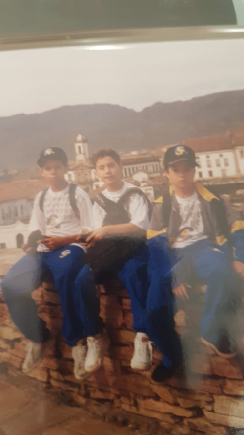

Felipe estudou no Colégio ICJ durante 6 anos e, na entrevista, contou sua experiência.
1-Você estudou quais séries no icj?
Estudei do terceiro período até a oitava série. Na época, a oitava série era a última do ensino fundamental.
2-Qual é a melhor lembrança para você, no Instituto?
Tenho muitas boas lembranças, mas a melhor são as amizades que fiz na época e que permanecem até hoje.
3-Qual foi a/o funcionário (a) mais marcante?
A professora Valéria, de Geografia e a professora Maria Augusta, de Matemática.
4-Você já visitou o colégio atualmente? Se sim, acha que sofreu alguma mudança estrutural?
Trabalhei no colégio em 2018 e 2019. Sim, sofreu várias mudanças.
5-Você estudou no turno vespertino ou matutino?
Ambos, mas no matutino por mais tempo.
6-Porque você estudou no ICJ?
Boa pergunta! Hahahaha meus pais que escolheram. Eu tinha 5 anos e não lembro de participar da decisão. Imagino que pela proximidade e reputação da escola.
7-Algum parente seu já estudou no Colégio?
Minha irmã mais nova.
8-Qual é a sua profissão atualmente?
Sou professor de inglês.
9-Qual era a sua matéria favorita? Acha que ela contribuiu para a sua profissão atual?
Inglês e biologia. Sim, acho que contribuíram bastante.
